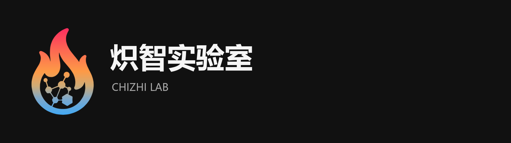
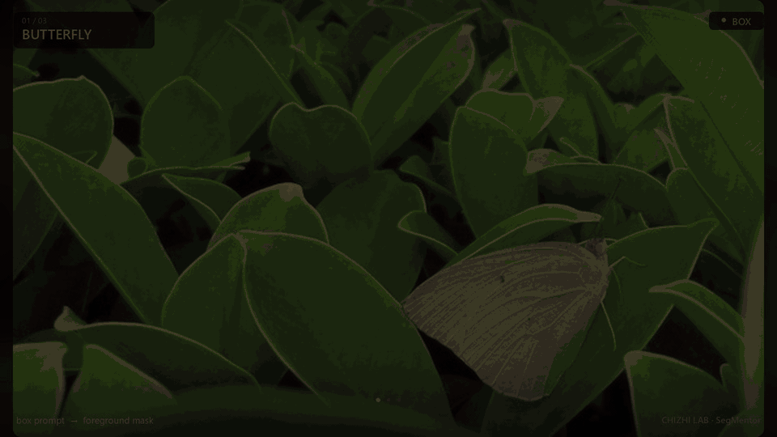
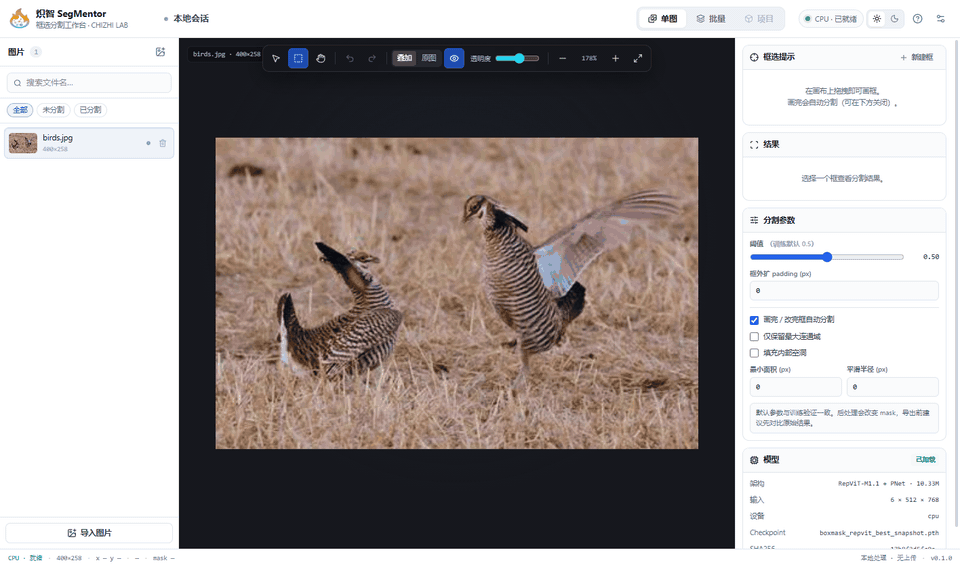
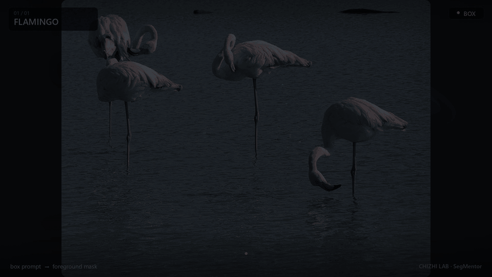
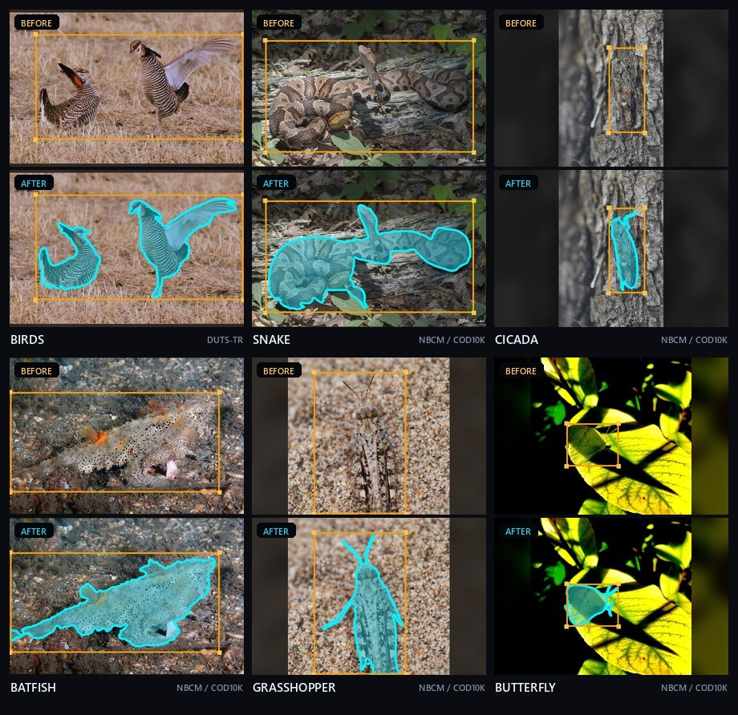
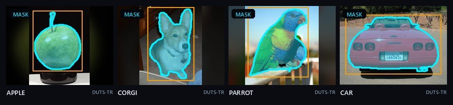
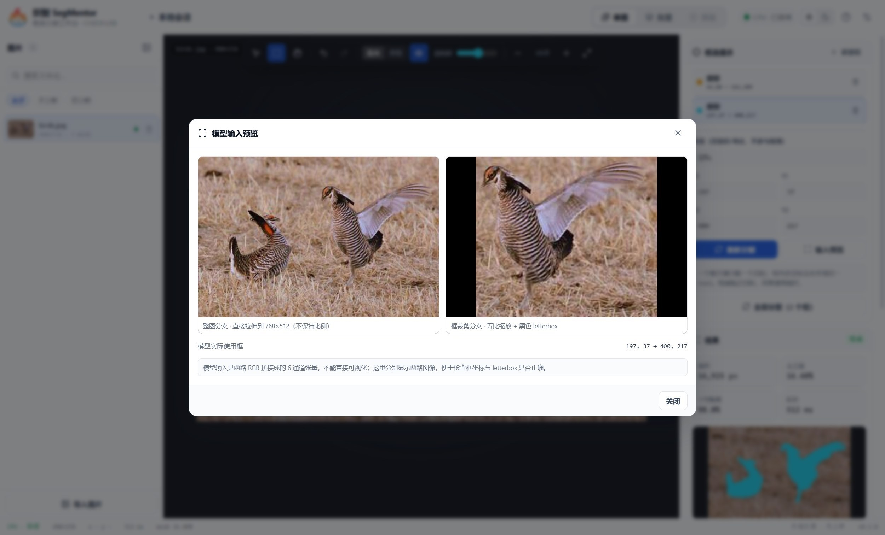

↗
单图工作台
画框、移动、缩放、数值微调、多框、撤销/重做；画完自动推理，结果即时叠加。

炽智 SegMentor 是一个本地运行的桌面分割工作台。导入图片、在目标上拉一个框，模型自动输出干净的前景 mask； 批量模式读取 VOC / COCO / LabelMe / YOLO / CSV，一次处理整批标注。

所有 mask 都由冻结权重真实推理，没有手工修图。GIF 只做缩放和压缩。




单图工作台负责精细调整，批量工作台负责吞吐和可复现。
画框、移动、缩放、数值微调、多框、撤销/重做；画完自动推理，结果即时叠加。
自动识别 VOC / COCO / LabelMe / YOLO / CSV；配对预览、暂停/恢复/取消、失败重试。
阈值、框外扩 padding、最大连通域、填洞、形态学平滑；默认参数保持科研原味。
图片、mask、模型全部留在本机；无上传、无遥测，运行时无网络请求。
PNG mask、overlay、RGBA 抠图、COCO 实例分割、LabelMe polygon、结果 CSV。
6 通道预处理与训练仓库 raw logits 逐 bit 一致；权重 SHA256 固定，代码 Apache-2.0。
RepViT-M1.1 + PNet 解码器，约 10.33M 参数，固定 6 × 512 × 768 输入：
前 3 通道是整图拉伸，后 3 通道是框裁剪 letterbox。输出取 net(x)[4]，
sigmoid + 0.5 阈值，再双线性回原图。
max_abs=0.0
本地构建包含冻结权重；安装包目前未签名，SmartScreen 可能提示，选择“更多信息 → 仍要运行”即可。
Jin Zhang, Ruiheng Zhang, Yanjiao Shi, Zhe Cao, Nian Liu, Fahad Shahbaz Khan. Learning Camouflaged Object Detection from Noisy Pseudo Label. ECCV 2024, pp. 158–174.
DOI: 10.1007/978-3-031-73232-4_9 ↗